library(tidyverse)
library(dslabs)19 Models
“All models are wrong, but some are useful.” –George E. P. Box
So far, our analysis of poll-related results has been based on a simple sampling model. This model assumes that each voter has an equal chance of being selected for the poll, similar to picking beads from an urn with two colors. However, in this chapter, we explore real-world data and discover that this model is incorrect. Instead, we propose a more effective approach where we directly model the outcomes of pollsters rather than the polls themselves.
19.1 Class competition
library(tidyverse)
clean <- function(x){
ret <- parse_number(str_remove(x,"%"))
ifelse(ret > 1, ret/100, ret)
}
odat <- read_csv("~/Downloads/Poll Competition（回复） - 第 1 张表单回复 (1).csv") |>
setNames(c("stamp", "name", "estimate", "upper", "lower", "n")) Rows: 31 Columns: 6
── Column specification ────────────────────────────────────────────────────────
Delimiter: ","
chr (5): 时间戳记, Name, Prediction, Interval upper bound, Interval lower bound
dbl (1): Sample size
ℹ Use `spec()` to retrieve the full column specification for this data.
ℹ Specify the column types or set `show_col_types = FALSE` to quiet this message.dat <- odat |>
mutate(id = as.character(1:n())) |>
mutate(across(c(estimate, upper, lower), clean)) |>
filter(estimate <= 1 & estimate > 0.2)
dat |> ggplot(aes(id, estimate, ymin = lower, ymax = upper)) +
geom_errorbar() +
geom_point() +
geom_hline(yintercept = 0.471, lty = 2) +
coord_flip()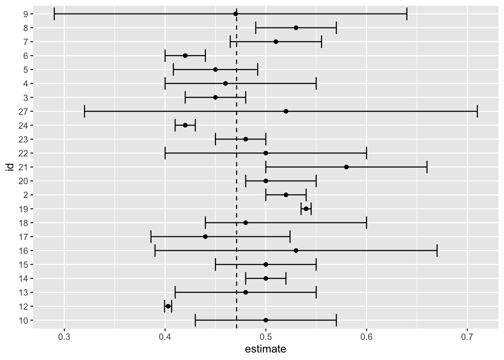
dat |>
filter(upper >= 0.471 & lower <= 0.471) |>
mutate(size = upper - lower) |>
arrange(size)# A tibble: 12 × 8
stamp name estimate upper lower n id size
<chr> <chr> <dbl> <dbl> <dbl> <dbl> <chr> <dbl>
1 2023-10-11 上午01:14:54 Li Li 0.48 0.5 0.45 100 23 0.05
2 2023-10-4 上午11:27:18 Laura Chen 0.45 0.48 0.42 30 3 0.06
3 2023-10-4 下午02:20:58 Ellie Zhang 0.450 0.492 0.408 100 5 0.0837
4 2023-10-4 下午05:29:15 Rachel Sussm… 0.51 0.555 0.465 200 7 0.0906
5 2023-10-10 下午11:30:30 Yiran Fu 0.5 0.55 0.45 50 15 0.1
6 2023-10-10 下午11:44:23 Lindo Nkambu… 0.44 0.524 0.386 200 17 0.138
7 2023-10-10 下午10:29:47 Min 0.5 0.57 0.43 30 10 0.14
8 2023-10-10 下午11:25:45 Alex Mellott 0.48 0.55 0.41 50 13 0.14
9 2023-10-4 下午01:43:59 Camille Shao 0.46 0.55 0.4 300 4 0.15
10 2023-10-10 下午11:45:31 Zhimeng Liu 0.48 0.6 0.44 25 18 0.16
11 2023-10-11 上午12:56:12 Dailin Luo 0.5 0.6 0.4 10 22 0.2
12 2023-10-11 上午07:51:54 Nia Martinez… 0.52 0.71 0.32 15 27 0.39 dat |> summarize(estimate =sum(estimate*n)/sum(n), n=sum(n))# A tibble: 1 × 2
estimate n
<dbl> <dbl>
1 0.487 202019.2 Data-driven models
19.2.1 Poll aggregators
mu <- 0.039
Ns <- c(1298, 533, 1342, 897, 774, 254, 812, 324, 1291, 1056, 2172, 516)
p <- (mu + 1) / 2
polls <- map_df(Ns, function(N) {
x <- sample(c(0, 1), size = N, replace = TRUE, prob = c(1 - p, p))
x_hat <- mean(x)
se_hat <- sqrt(x_hat * (1 - x_hat) / N)
list(estimate = 2 * x_hat - 1,
low = 2*(x_hat - 1.96*se_hat) - 1,
high = 2*(x_hat + 1.96*se_hat) - 1,
sample_size = N)
}) |> mutate(poll = seq_along(Ns))Here is a visualization showing the intervals the pollsters would have reported for the difference between Obama and Romney:
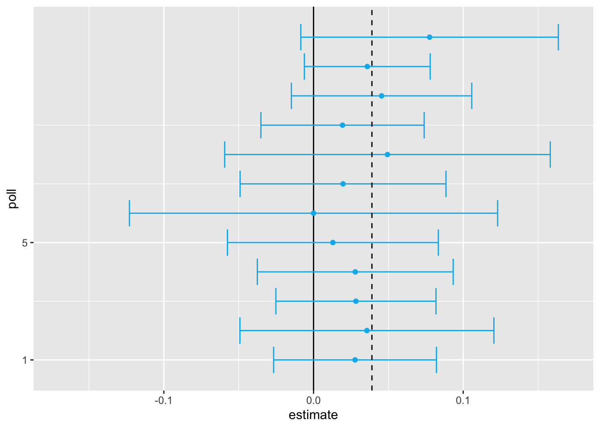
sum(polls$sample_size)[1] 11269participants. Basically, we construct an estimate of the spread, let’s call it \(\mu\), with a weighted average in the following way:
mu_hat <- polls |>
summarize(avg = sum(estimate*sample_size) / sum(sample_size)) |>
pull(avg)Iur margin of error is
p_hat <- (1 + mu_hat)/2;
moe <- 2*1.96*sqrt(p_hat*(1 - p_hat)/sum(polls$sample_size))
moe[1] 0.01845451Thus, we can predict that the spread will be 3.1 plus or minus 1.8, which not only includes the actual result we eventually observed on election night, but is quite far from including 0. Once we combine the 12 polls, we become quite certain that Obama will win the popular vote.
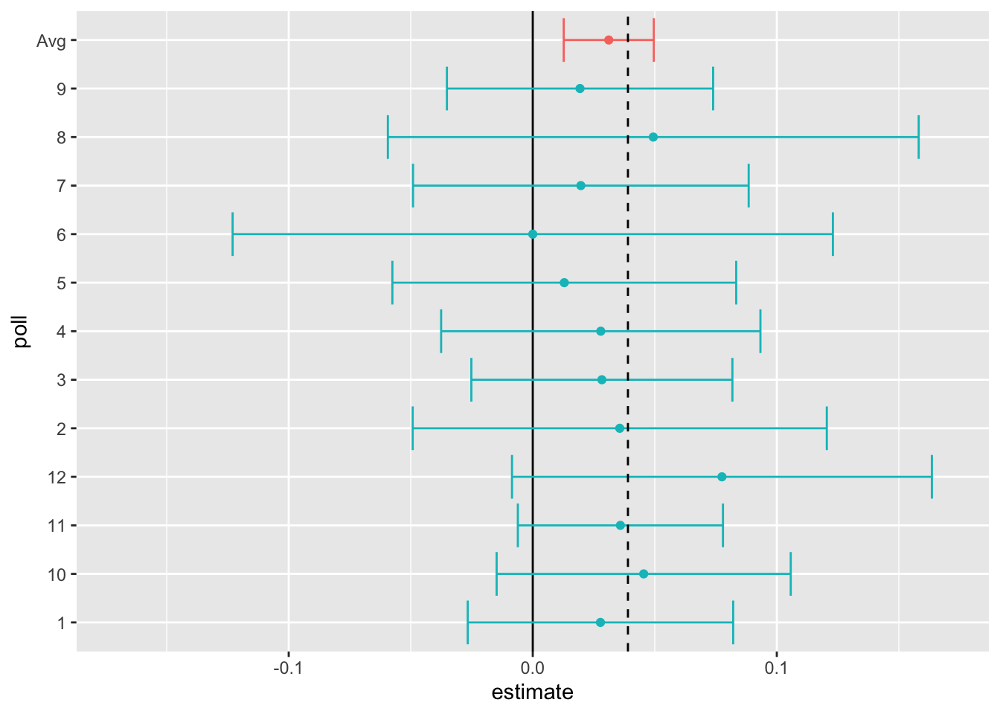
However, this was just a simulation to illustrate the idea.
library(dslabs)
polls <- polls_us_election_2016 |>
filter(state == "U.S." & enddate >= "2016-10-31" &
(grade %in% c("A+","A","A-","B+") | is.na(grade)))We add a spread estimate:
polls <- polls |>
mutate(spread = rawpoll_clinton/100 - rawpoll_trump/100)We have 49 estimates of the spread.
The expected value is the election night spread \(\mu\) and the standard error is \(2\sqrt{p (1 - p) / N}\). Assuming the urn model we described earlier is a good one, we can use this information to construct a confidence interval based on the aggregated data. The estimated spread is:
mu_hat <- polls |>
summarize(mu_hat = sum(spread * samplesize) / sum(samplesize)) |>
pull(mu_hat)and the standard error is:
p_hat <- (mu_hat + 1)/2
moe <- 1.96 * 2 * sqrt(p_hat * (1 - p_hat) / sum(polls$samplesize))
moe[1] 0.006623178So we report a spread of 1.43% with a margin of error of 0.66%. On election night, we discover that the actual percentage was 2.1%, which is outside a 95% confidence interval. What happened?
A histogram of the reported spreads shows a problem:
polls |> ggplot(aes(spread)) + geom_histogram(color = "black", binwidth = .01)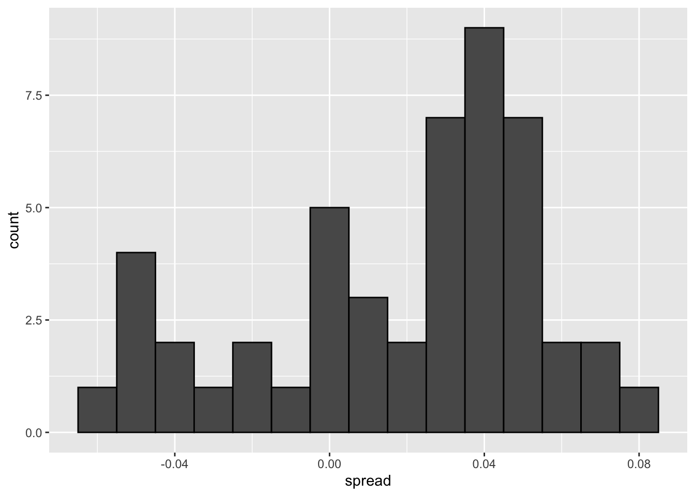
The data does not appear to be normally distributed and the standard error appears to be larger than 0.0066232. The theory is not working here and in the next section we describe a useful data-driven model.
19.2.2 Beyond the simple sampling model
Notice that data come various pollsters and some are taking several polls a week:
polls |> group_by(pollster) |> summarize(n())# A tibble: 15 × 2
pollster `n()`
<fct> <int>
1 ABC News/Washington Post 7
2 Angus Reid Global 1
3 CBS News/New York Times 2
4 Fox News/Anderson Robbins Research/Shaw & Company Research 2
5 IBD/TIPP 8
6 Insights West 1
7 Ipsos 6
8 Marist College 1
9 Monmouth University 1
10 Morning Consult 1
11 NBC News/Wall Street Journal 1
12 RKM Research and Communications, Inc. 1
13 Selzer & Company 1
14 The Times-Picayune/Lucid 8
15 USC Dornsife/LA Times 8Let’s visualize the data for the pollsters that are regularly polling:

This plot reveals an unexpected result. First, consider that the standard error predicted by theory for each poll is between 0.018 and 0.033:
polls |> group_by(pollster) |>
filter(n() >= 6) |>
summarize(se = 2 * sqrt(p_hat * (1 - p_hat) / median(samplesize)))# A tibble: 5 × 2
pollster se
<fct> <dbl>
1 ABC News/Washington Post 0.0265
2 IBD/TIPP 0.0333
3 Ipsos 0.0225
4 The Times-Picayune/Lucid 0.0196
5 USC Dornsife/LA Times 0.0183This agrees with the within poll variation we see. However, there appears to be differences across the polls.
one_poll_per_pollster <- polls |> group_by(pollster) |>
filter(enddate == max(enddate)) |>
ungroup()Here is a histogram of the data for these 15 pollsters:
qplot(spread, data = one_poll_per_pollster, binwidth = 0.01)Warning: `qplot()` was deprecated in ggplot2 3.4.0.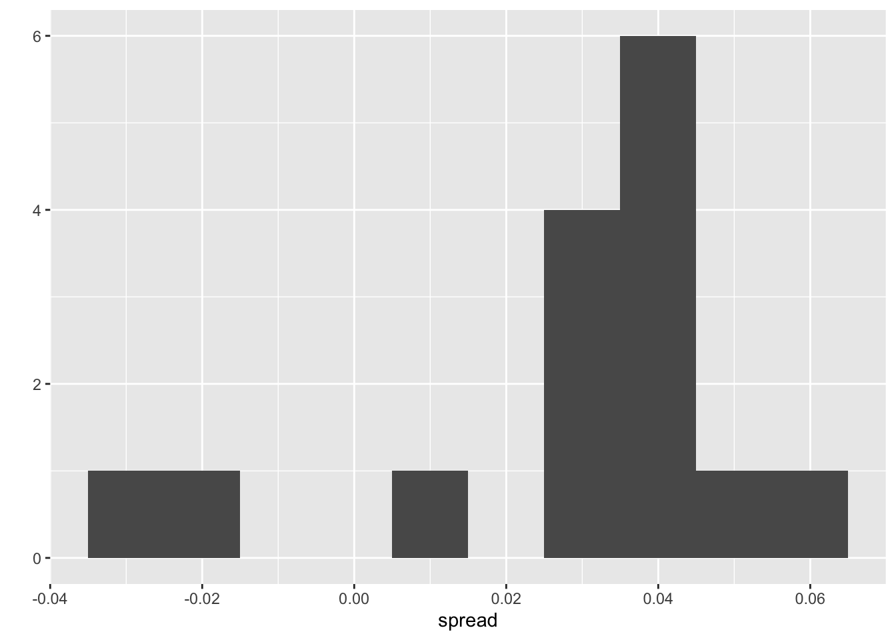
Although we are no longer using a model with red (Republicans) and blue (Democrat) beads in an urn, our new model can also be thought of as an urn mode but containing poll results from all possible pollsters and think of our $N=$15 data points
\[X_1,\dots X_N\]
a as a random sample from this urn. To develop a useful model, we assume that the expected value of our urn is the actual spread \(\mu=2p-1\), which implies that the sample average has expected value \(\mu\).
Now, because instead of 0s and 1s, our urn contains continuous numbers, the standard deviation of the urn is no longer
\[\sqrt{p(1-p)}\].
So our new statistical model is that
\[ X_1, \dots, X_N, \text{E}(X) = \mu \text{ and } \text{SD}(X) = \sigma \].
The distribution, for now, is unspecified. But we consider \(N\) to be large enough to assume that the sample average
\[ \bar{X} = \sum_{i=1}^N X_i \]
with
\[ \mbox{E}(\bar{X}) = \mu \]
and
\[ \mbox{SE}(\bar{X}) = \sigma / \sqrt{N} \]
and
\[ \bar{X} \sim \mbox{N}(\mu, \sigma / \sqrt{N}) \]
19.2.3 Estimating the standard deviation
T \[ s = \sqrt{ \frac{1}{N-1} \sum_{i=1}^N (X_i - \bar{X})^2 } \]
The sd function in R computes the sample standard deviation:
sd(one_poll_per_pollster$spread)[1] 0.0241936919.2.4 Computing a confidence interval
We are now ready to form a new confidence interval based on our new data-driven model:
results <- one_poll_per_pollster |>
summarize(avg = mean(spread),
se = sd(spread) / sqrt(length(spread))) |>
mutate(start = avg - 1.96 * se,
end = avg + 1.96 * se)
round(results * 100, 1) avg se start end
1 2.9 0.6 1.7 4.1Our confidence interval is wider now since it incorporates the pollster variability. It does include the election night result of 2.1%. Also, note that it was small enough not to include 0, which means we were confident Clinton would win the popular vote.
19.2.5 The t-distribution
The statistic on which confidence intervals for \(\mu\) are based is
\[ Z = \frac{\bar{X} - \mu}{\sigma/\sqrt{N}} \]
CLT tells us that Z is approximately normally distributed with expected value 0 and standard error 1. But in practice we don’t know \(\sigma\) so we use:
\[ t = \frac{\bar{X} - \mu}{s/\sqrt{N}} \]
This is referred to a t-statistic. By substituting \(\sigma\) with \(s\) we introduce some variability. The theory tells us that \(t\) follows a student t-distribution with \(N-1\) degrees of freedom. The degrees of freedom is a parameter that controls the variability via fatter tails:
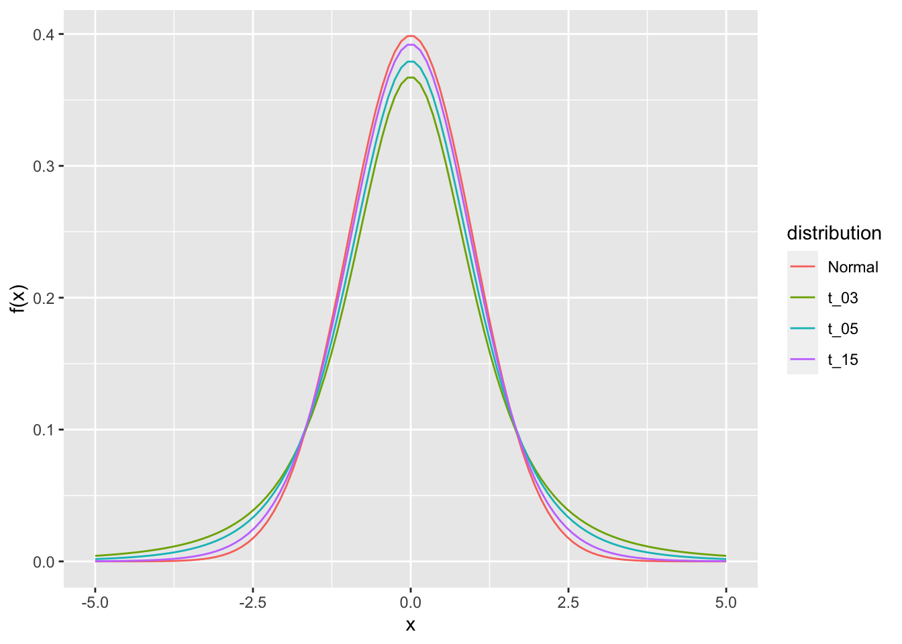
If we are willing to assume the pollster effect data is normally distributed, based on the sample data \(X_1, \dots, X_N\),
one_poll_per_pollster |>
ggplot(aes(sample = scale(spread))) + stat_qq() +
geom_abline()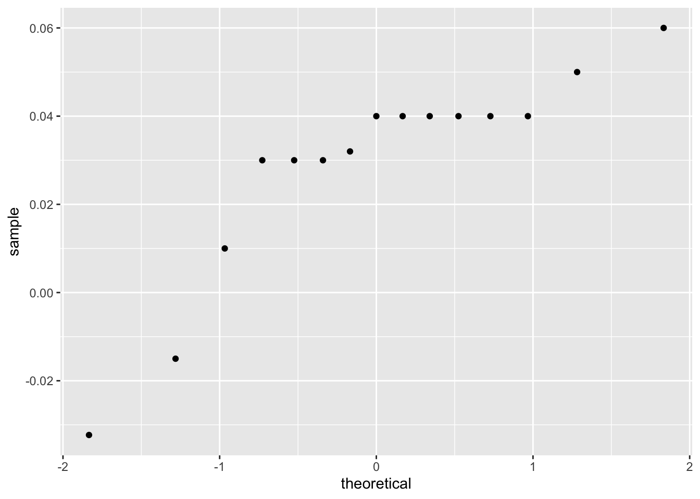
then \(t\) follows a t-distribution with \(N-1\) degrees of freedom. So perhaps a better confidence interval for \(\mu\) is:
z <- qt(0.975, nrow(one_poll_per_pollster) - 1)
one_poll_per_pollster |>
summarize(avg = mean(spread), moe = z*sd(spread)/sqrt(length(spread))) |>
mutate(start = avg - moe, end = avg + moe) # A tibble: 1 × 4
avg moe start end
<dbl> <dbl> <dbl> <dbl>
1 0.0290 0.0134 0.0156 0.0424A bit larger than the one using normal is
qt(0.975, 14)[1] 2.144787is bigger than
qnorm(0.975)[1] 1.959964This results in slightly larger confidence interval than we obtained before:
start end
1 1.6 4.2Note that using the t-distribution and the t-statistic is the basis for t-tests, widely used approach for computing p-values. To learn more about t-tests, you can consult any statistics textbook.
The t-distribution can also be used to model errors in bigger deviations that are more likely than with the normal distribution, as seen in the densities we previously saw.
polls_us_election_2016 |>
filter(state == "Wisconsin" &
enddate >= "2016-10-31" &
(grade %in% c("A+", "A", "A-", "B+") | is.na(grade))) |>
mutate(spread = rawpoll_clinton/100 - rawpoll_trump/100) |>
mutate(state = as.character(state)) |>
left_join(results_us_election_2016, by = "state") |>
mutate(actual = clinton/100 - trump/100) |>
summarize(actual = first(actual), avg = mean(spread),
sd = sd(spread), n = n()) |>
select(actual, avg, sd, n) actual avg sd n
1 -0.007 0.07106667 0.01041454 619.3 Bayesian models
In 2016 FiveThirtyEight showed this chart depicting distributions for the percent of the popular vote for each candidate:
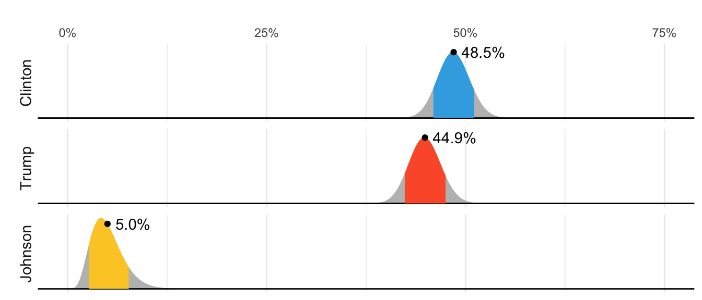
But what does this mean in the context of the theory we have covered in which these percentages are considered fixed.
19.3.1 Priors, posteriors and and credible intervals
In the previous chapter we an estimate and margin of error for the difference in popular votes between Hillary Clinton and Donald Trump, which we denoted with \(\mu\). The estimate was between 2 and 3 percent and the confidence interval did not include 0. A forecaster would use this to predict Hillary Clinton would win the popular vote. But to make a probabilistic statement about winning the election, we need to use a Bayesian.
We start the Bayesian approach by quantifying our knowledge before seeing any data. This is done using a probability distribution refereed to as a prior. For our example we could write:
\[ \mu \sim N(\theta, \tau) \]
We can think of \(\theta\) as our best guess for the popular vote difference had we not seen any polling data and we can think of \(\tau\) as quantifying how certain we feel about this guess. Generally, if we have expert knowledge related to \(\mu\), we can try to quantify it with the prior disribution. In the case of election polls, experts use fundamentals, which include, for example, the state of the economy, to develop prior distributions. The data is used to update our initial guess or prior belief. This can be done mathematically if we define the distribution for the observed data, for any given \(\mu\). In our particular example we would write down a model the average of our polls, which is the same as before:
\[ \bar{X} \mid \mu \sim N(\mu, \sigma/\sqrt{N}) \]
As before, \(\sigma\) describes randomness due to sampling and the pollster effects. In the Bayesian contexts, this is referred to as the sampling distribution. Note that we write the conditional \(\bar{X} \mid \mu\) becuase \(\mu\) is now considered a random variable.
We do not show the derivations here, but we can now use Calculus and a version fo Bayes Theorem foto derive the distribution of \(\mu\) conditional of the data, refered to as the posterior distribution. Specifcially we can show the \(\mu \mid \bar{X}\) follows a normal distribution with expected value:
\[ \begin{aligned} \mbox{E}(\mu \mid \bar{X}) &= B \theta + (1-B) \bar{X}\\ &= \theta + (1-B)(\bar{X}-\theta)\\ \mbox{with } B &= \frac{\sigma^2/N}{\sigma^2/N+\tau^2} \end{aligned} \] and standard error :
\[ \mbox{SE}(\mu \mid \bar{X})^2 = \frac{1}{1/\sigma^2+1/\tau^2}. \]
Note that the expected value is a weighted average of our prior guess \(\theta\) and the observed data \(\bar{X}\). The weight depends on how certain we are about our prior belief, quantified by \(\tau\), and the precision \(\sigma/N\) of the summary of our observed data. This weighted average is sometimes referred to as shrinking because it shrinks estimates towards a prior value.
These quantities useful for updating our beliefs. Specifically, we use the posterior distribution not only to compute the expected value of \(\mu\) given the observed data, but for any probability \(\alpha\) we can construct intervals, centered at our estimate and with \(\alpha\) chance of ocurring.
To compute a posterior distribution and construct a credible interval, we define a prior distribution with mean 0% and standard error 3.5% which can be interpreted as: before seing polling data, we don’t think any candidate has the advantage and a difference of up to 7% either way is possible. We compute the posterior distribution using the equations above:
theta <- 0
tau <- 0.035
sigma <- results$se
x_bar <- results$avg
B <- sigma^2 / (sigma^2 + tau^2)
posterior_mean <- B*theta + (1 - B)*x_bar
posterior_se <- sqrt(1/(1/sigma^2 + 1/tau^2))
posterior_mean[1] 0.02808534posterior_se[1] 0.006149604Because we know the posterior distribution in normal, we can consturct a credible interval like this:
posterior_mean + c(-1, 1) * qnorm(0.975) * posterior_se[1] 0.01603234 0.04013834Furthermore, we can now make the probabilitic statement we could not make with the frequentists approach by computing the posterior probability of Hillary winning the popular vote. Specifically, \(\mbox{Pr}(\mu>0 \mid \bar{X})\) can be computed like this:
1 - pnorm(0, posterior_mean, posterior_se)[1] 0.9999975This says we are 100% sure Clinton will win the popular vote, which seems too overconfident. Also, it is not in agreement with FiveThirtyEight’s 81.4%. What explains this difference? There is a level of uncertainty that we are not yet describing, and we will get back to that later.
19.4 Hierarchichal Models
Hierarchical models are useful for quantifying different levels of variability or uncertainty. One can use them using a Bayesian or a Frequentist framework. However because in the Frequentist framework they often extend a model with a fixed parameter by assuming the parameter is actually random, the model description includes two distribution that look like the prior and a sampling distribution used in the Bayesian framework, making the resulting summaries very similar or even equal to what is obtained with a Bayesian context. A key difference between the Bayesian and the Frequentist hierarchical model approach is that in the latter we use data to construct priors rather than treat priors as a quantification of prior expert knowledge. Here illustrate the use of hiereachical models with an example from sports, in which dedicated fans, intuitively apply the ideas of hierarchical models to manage expectations when a new player is of to an exceptionally good start.
19.4.1 Case study: election forecasting
Since the 2008 elections, organizations other than FiveThirtyEight have started their own election forecasting groups that also aggregate polling data and uses statistical models to make predictions. However, in 2016 forecasters underestimated Trump’s chances of winning greatly. The day before the election the New York Times reported the following probabilities for Hillary Clinton winning the presidency:
| NYT | 538 | HuffPost | PW | PEC | DK | Cook | Roth | |
|---|---|---|---|---|---|---|---|---|
| Win Prob | 85% | 71% | 98% | 89% | >99% | 92% | Lean Dem | Lean Dem |
For example, the Princeton Election Consortium (PEC) gave Trump less than 1% chance of winning, while the Huffington Post gave him a 2% chance. In contrast, FiveThirtyEight had Trump’s probability of winning at 29%, substantially higher than the others. In fact, four days before the election FiveThirtyEight published an article titled Trump Is Just A Normal Polling Error Behind Clinton
So why did FiveThirtyEight’s model fair so much better than others? How could PEC and Huffington Post get it so wrong if they were using the same data? In this chapter we describe how FiveThirtyEight used a hierarchical model to correctly account for key sources of variability and outperform all other forecasters. For illustrative purposes we will cotinue examining our popular vote example. In the final section we then describe the more complex approach used to forecast the electoral college result.
19.4.2 The general bias
In the previous chapter we computed the posterior probability of Hillary Clinton winning the popular vote with a standard Bayesian analysis and found it to be very close to 100%. However, FiveThirtyEight gave her a 81.4% chance[^models-4]. What explains this difference? Below we describe the general bias, another source of variability, included in the FiveThirtyEight model, that accounts for the difference.
After elections are over, one can look at the difference between pollster predictions and actual result. An important observation that our initial models did not take into account is that it is common to see a general bias that affects most pollsters in the same way making the observed data correlated. There is no agreed upon explanation for this, but we do observe it in historical data: in one election, the average of polls favors Democrats by 2%, then in the following election they favor Republicans by 1%, then in the next election there is no bias, then in the following one Republicans are favored by 3%, and so on. In 2016, the polls were biased in favor of the Democrats by 1-2%.
However, although we know this bias term affects our polls, we have no way of knowing what this bias is until election night. So we can’t correct our polls accordingly. What we can do is include a term in our model that accounts for the variability.
19.4.3 Mathematical representations of the hierarchical model
Suppose we are collecting data from one pollster and we assume there is no general bias. The pollster collects several polls with a sample size of \(N\), so we observe several measurements of the spread \(X_1, \dots, X_J\). Suppose the real proportion for Hillary is \(p\) and the difference is \(\mu\). The urn model theory tells us that these random variables are normally distributed with expected value \(\mu\) and standard error \(2 \sqrt{p(1-p)/N}\):
\[ X_j \sim \mbox{N}\left(\mu, \sqrt{p(1-p)/N}\right) \]
We use the index \(j\) to represent the different polls conducted by this pollster. Here is a simulation for six polls assuming the spread is 2.1 and \(N\) is 2,000:
set.seed(3)
J <- 6
N <- 2000
mu <- .021
p <- (mu + 1)/2
X <- rnorm(J, mu, 2 * sqrt(p * (1 - p) / N))Now suppose we have \(J=6\) polls from each of \(I=5\) different pollsters. For simplicity, let’s say all polls had the same sample size \(N\). The urn model tell us the distribution is the same for all pollsters so to simulate data, we use the same model for each:
I <- 5
J <- 6
N <- 2000
X <- sapply(1:I, function(i){
rnorm(J, mu, 2 * sqrt(p * (1 - p) / N))
})As expected, the simulated data does not really seem to capture the features of the actual data because it does not account for pollster-to-pollster variability:
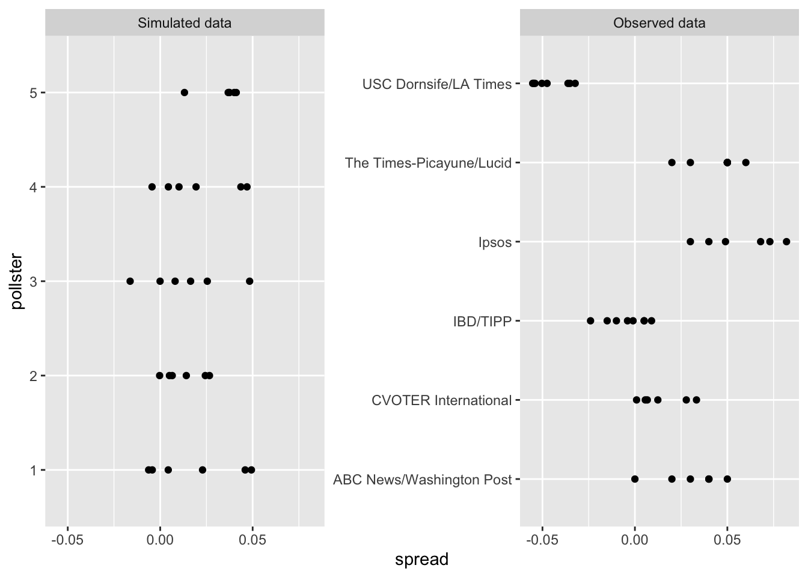
To fix this, we need to represent the two levels of variability and we need two indexes, one for pollster and one for the polls each pollster takes. We use \(X_{ij}\) with \(i\) representing the pollster and \(j\) representing the \(j\)-th poll from that pollster. The model is now augmented to include pollster effects \(h_i\), referred to as house effects by FiveThirtyEight, with standard deviation \(\sigma_h\):
\[ \begin{aligned} h_i &\sim \mbox{N}\left(0, \sigma_h\right)\\ X_{i,j} \mid h_i &\sim \mbox{N}\left(\mu + h_i, \sqrt{p(1-p)/N}\right) \end{aligned} \]
To simulate data from a specific pollster, we first need to draw an \(h_i\) and the generate individual poll data after adding this effect. Here is how we would do it for one specific pollster. We assume \(\sigma_h\) is 0.025:
I <- 5
J <- 6
N <- 2000
mu <- .021
p <- (mu + 1) / 2
h <- rnorm(I, 0, 0.025)
X <- sapply(1:I, function(i){
mu + h[i] + rnorm(J, 0, 2 * sqrt(p * (1 - p) / N))
})The simulated data now looks more like the actual data:
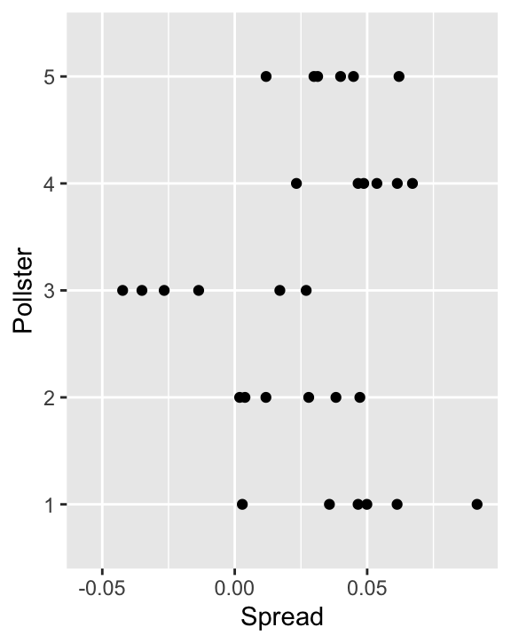
Note that \(h_i\) is common to all the observed spreads from a specific pollster. Different pollsters have a different \(h_i\), which explains why we can see the groups of points shift up and down from pollster to pollster.
Now, in the model above, we assume the average house effect is 0. We think that for every pollster biased in favor of our party, there is another one in favor of the other and assume the standard deviation is \(\sigma_h\). But historically we see that every election has a general bias affecting all polls. We can observe this with the 2016 data, but if we collect historical data, we see that the average of polls misses by more than models like the one above predict. To see this, we would take the average of polls for each election year and compare it to the actual value. If we did this, we would see a difference with a standard deviation of between 2-3%. To incorporate this into the model, we can add another level account for this variability:
\[ \begin{aligned} b &\sim \mbox{N}\left(0, \sigma_b\right)\\ h_j \mid \, b &\sim \mbox{N}\left(b, \sigma_h\right)\\ X_{i,j} | \, h_j, b &\sim \mbox{N}\left(\mu + h_j, \sqrt{p(1-p)/N}\right) \end{aligned} \]
This model accounts for three levels of variability: 1) variability in the bias observed from election to election, quantified by \(\sigma_b\), 2) pollster-to-pollster or house effect variability, quantified by \(\sigma_h\), and 3) poll sampling variability, which we can derive to be \(\sqrt(p(1-p)/N)\).
Note that not including a term like \(b\) in the models, is what led many forecasters to be overconfident. This random variable changes from election to election, but for any given election, it is the same for all pollsters and polls within on election (note it does not have an index). This implies we can’t estimate \(\sigma_h\) with data from just one election. It also implies that the random variables \(X_{i,j}\) for a fixed election year share the same \(b\) and are therefore correlated.
One way to interpret \(b\) is as the difference between the average of all polls from all pollsters and the actual result of the election. Because we don’t know the actual result until after the election, we can’t estimate \(b\) until after the election.
19.4.4 Computing a posterior probability
Now let’s fit the model above to data. We will use the same data used in the previous chapters and saved in one_poll_per_pollster.
Here we have just one poll per pollster so we will drop the \(j\) index and represent the data as before with \(X_1, \dots, X_I\). As a reminder we have data from \(I=15\) pollsters. Based on the model assumptions described above, we can mathematically show that the average \(\bar{X}\)
x_bar <- mean(one_poll_per_pollster$spread)has expected value \(\mu\), thus it provides an unbiased estimate of the outcome of interest. However, how precise is this estimate? Can we use the observed stample standard deviation to construct an estimate of the standard error of \(\bar{X}\)?
It turns out that, because the \(X_i\) are correlated, estimating the standard error is more complex than what we have described up to now. Specifically, using advanced statistical calculations not shown here, we can show that the typical variance (standard error squared) estimate
s2 <- with(one_poll_per_pollster, sd(spread)^2 / length(spread))will consistently underestimate the true standard error by about \(\sigma_b^2\). And, as mentioned earlier, to estimate \(\sigma_b\), we need data from several elections. By collecting and analyzing polling data from several elections, FiveThirtyEight estimates this variability and find that \(\sigma_b \approx 0.025\). We can therefore greatly improve our standard error estimate by adding this quantity:
sigma_b <- 0.025
se <- sqrt(s2 + sigma_b^2)If we redo the Bayesian calculation taking this variability into account, we get a result much closer to FiveThirtyEight’s:
mu <- 0
tau <- 0.035
B <- se^2 / (se^2 + tau^2)
posterior_mean <- B*mu + (1-B)*x_bar
posterior_se <- sqrt( 1/ (1/se^2 + 1/tau^2))
1 - pnorm(0, posterior_mean, posterior_se)[1] 0.8174373Note that by accounting for the general bias term, our Bayesian analysis now produces a posterior probability similar to that reported by FiveThirtyEight.
19.4.5 Predicting the electoral college
Up to now we have focused on the popular vote. But in the United States, elections are not decided by the popular vote but rather by what is known as the electoral college. Each state gets a number of electoral votes that depends, in a somewhat complex way, on the population size of the state. Here are the top 5 states ranked by electoral votes in 2016.
results_us_election_2016 |> top_n(5, electoral_votes) state electoral_votes clinton trump others
1 California 55 61.7 31.6 6.7
2 Texas 38 43.2 52.2 4.5
3 Florida 29 47.8 49.0 3.2
4 New York 29 59.0 36.5 4.5
5 Illinois 20 55.8 38.8 5.4
6 Pennsylvania 20 47.9 48.6 3.6With some minor exceptions we don’t discuss, the electoral votes are won all or nothing. For example, if you won California in 2016 by just 1 vote, you still get all 55 of its electoral votes. This means that by winning a few big states by a large margin, but losing many small states by small margins, you can win the popular vote and yet lose the electoral college. This happened in 1876, 1888, 2000, and 2016. The idea behind this is to avoid a few large states having the power to dominate the presidential election.
Many people in the US consider the electoral college unfair and would like to see it abolished in favor of the popular vote.
We are now ready to predict the electoral college result for 2016. We start by aggregating results from a poll taken during the last week before the election. We use the grepl, which finds strings in character vectors, to remove polls that are not for entire states.
results <- polls_us_election_2016 |>
filter(state!="U.S." &
!grepl("CD", state) &
enddate >="2016-10-31" &
(grade %in% c("A+","A","A-","B+") | is.na(grade))) |>
mutate(spread = rawpoll_clinton/100 - rawpoll_trump/100) |>
group_by(state) |>
summarize(avg = mean(spread), sd = sd(spread), n = n()) |>
mutate(state = as.character(state))Here are the five closest races according to the polls:
results |> arrange(abs(avg))# A tibble: 47 × 4
state avg sd n
<chr> <dbl> <dbl> <int>
1 Florida 0.00356 0.0163 7
2 North Carolina -0.0073 0.0306 9
3 Ohio -0.0104 0.0252 6
4 Nevada 0.0169 0.0441 7
5 Iowa -0.0197 0.0437 3
6 Michigan 0.0209 0.0203 6
7 Arizona -0.0326 0.0270 9
8 Pennsylvania 0.0353 0.0116 9
9 New Mexico 0.0389 0.0226 6
10 Georgia -0.0448 0.0238 4
# ℹ 37 more rowsWe now introduce the command left_join that will let us easily add the number of electoral votes for each state from the dataset us_electoral_votes_2016. Here, we simply say that the function combines the two datasets so that the information from the second argument is added to the information in the first:
results <- left_join(results, results_us_election_2016, by = "state")Notice that some states have no polls because the winner is pretty much known:
results_us_election_2016 |> filter(!state %in% results$state) |>
pull(state)[1] "Rhode Island" "Alaska" "Wyoming"
[4] "District of Columbia"No polls were conducted in DC, Rhode Island, Alaska, and Wyoming because Democrats are sure to win in the first two and Republicans in the last two.
Because we can’t estimate the standard deviation for states with just one poll, we will estimate it as the median of the standard deviations estimated for states with more than one poll:
results <- results |>
mutate(sd = ifelse(is.na(sd), median(results$sd, na.rm = TRUE), sd))To make probabilistic arguments, we will use a Monte Carlo simulation. For each state, we apply the Bayesian approach to generate an election day \(\mu\). We could construct the priors for each state based on recent history. However, to keep it simple, we assign a prior to each state that assumes we know nothing about what will happen. Since from election year to election year the results from a specific state don’t change that much, we will assign a standard deviation of 2% or \(\tau=0.02\). For now, we will assume, incorrectly, that the poll results from each state are independent. The code for the Bayesian calculation under these assumptions looks like this:
mu <- 0
tau <- 0.02
results |> mutate(sigma = sd/sqrt(n),
B = sigma^2 / (sigma^2 + tau^2),
posterior_mean = B * mu + (1 - B) * avg,
posterior_se = sqrt(1/ (1/sigma^2 + 1/tau^2)))# A tibble: 47 × 12
state avg sd n electoral_votes clinton trump others sigma
<chr> <dbl> <dbl> <int> <int> <dbl> <dbl> <dbl> <dbl>
1 Alabama -0.149 2.53e-2 3 9 34.4 62.1 3.6 1.46e-2
2 Arizona -0.0326 2.70e-2 9 11 45.1 48.7 6.2 8.98e-3
3 Arkansas -0.151 9.90e-4 2 6 33.7 60.6 5.8 7.00e-4
4 Californ… 0.260 3.87e-2 5 55 61.7 31.6 6.7 1.73e-2
5 Colorado 0.0452 2.95e-2 7 9 48.2 43.3 8.6 1.11e-2
6 Connecti… 0.0780 2.11e-2 3 7 54.6 40.9 4.5 1.22e-2
7 Delaware 0.132 3.35e-2 2 3 53.4 41.9 4.7 2.37e-2
8 Florida 0.00356 1.63e-2 7 29 47.8 49 3.2 6.18e-3
9 Georgia -0.0448 2.38e-2 4 16 45.9 51 3.1 1.19e-2
10 Hawaii 0.186 2.10e-2 1 4 62.2 30 7.7 2.10e-2
# ℹ 37 more rows
# ℹ 3 more variables: B <dbl>, posterior_mean <dbl>, posterior_se <dbl>The estimates based on posterior do move the estimates towards 0, although the states with many polls are influenced less. This is expected as the more poll data we collect, the more we trust those results:
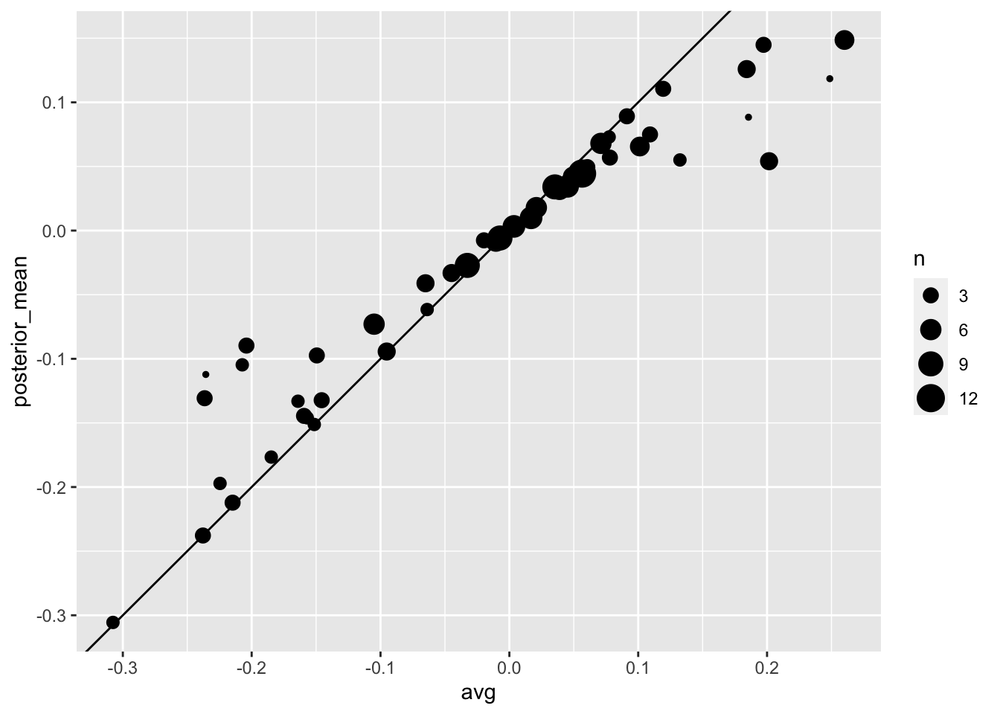
Now we repeat this 10,000 times and generate an outcome from the posterior. In each iteration, we keep track of the total number of electoral votes for Clinton. Remember that Trump gets 270 minus the votes for Clinton. Also note that the reason we add 7 in the code is to account for Rhode Island and D.C.:
B <- 10000
mu <- 0
tau <- 0.02
clinton_EV <- replicate(B, {
results |> mutate(sigma = sd/sqrt(n),
B = sigma^2 / (sigma^2 + tau^2),
posterior_mean = B * mu + (1 - B) * avg,
posterior_se = sqrt(1 / (1/sigma^2 + 1/tau^2)),
result = rnorm(length(posterior_mean),
posterior_mean, posterior_se),
clinton = ifelse(result > 0, electoral_votes, 0)) |>
summarize(clinton = sum(clinton)) |>
pull(clinton) + 7
})
mean(clinton_EV > 269)[1] 0.998This model gives Clinton over 99% chance of winning. A similar prediction was made by the Princeton Election Consortium. We now know it was quite off. What happened?
The model above ignores the general bias and assumes the results from different states are independent. After the election, we realized that the general bias in 2016 was not that big: it was between 1 and 2%. But because the election was close in several big states and these states had a large number of polls, pollsters that ignored the general bias greatly underestimated the standard error. Using the notation we introduce, they assumed the standard error was \(\sqrt{\sigma^2/N}\) which with large N is quite smaller than the more accurate estimate \(\sqrt{\sigma^2/N + \sigma_b^2}\). FiveThirtyEight, which models the general bias in a rather sophisticated way, reported a closer result. We can simulate the results now with a bias term. For the state level, the general bias can be larger so we set it at \(\sigma_b = 0.03\):
tau <- 0.02
bias_sd <- 0.03
clinton_EV_2 <- replicate(1000, {
results |> mutate(sigma = sqrt(sd^2/n + bias_sd^2),
B = sigma^2 / (sigma^2 + tau^2),
posterior_mean = B*mu + (1-B)*avg,
posterior_se = sqrt( 1/ (1/sigma^2 + 1/tau^2)),
result = rnorm(length(posterior_mean),
posterior_mean, posterior_se),
clinton = ifelse(result>0, electoral_votes, 0)) |>
summarize(clinton = sum(clinton) + 7) |>
pull(clinton)
})
mean(clinton_EV_2 > 269)[1] 0.848This gives us a much more sensible estimate. Looking at the outcomes of the simulation, we see how the bias term adds variability to the final results.
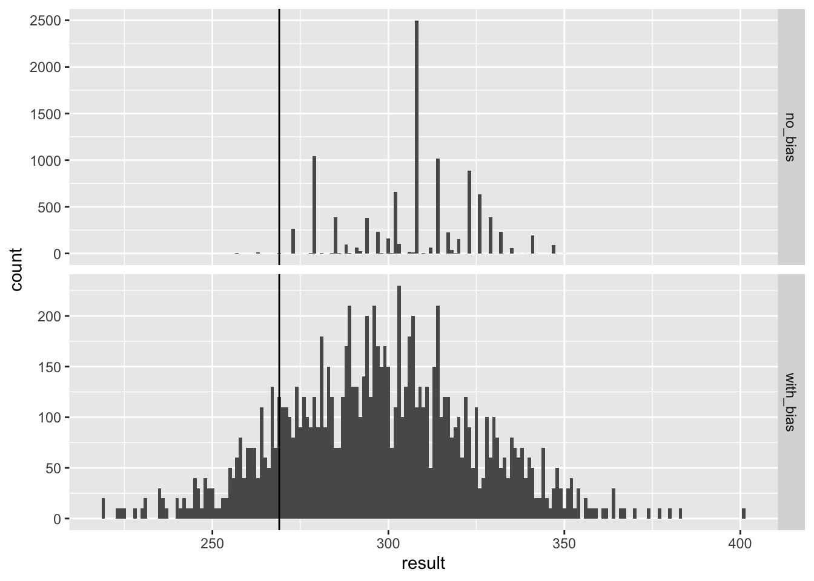
FiveThirtyEight includes many other features we do not include here. One is that they model variability with distributions that have high probabilities for extreme events compared to the normal. One way we could do this is by changing the distribution used in the simulation from a normal distribution to a t-distribution. FiveThirtyEight predicted a probability of 71%.
19.5 Forecasting
Forecasters like to make predictions well before the election. The predictions are adapted as new polls come out. However, an important question forecasters must ask is: how informative are polls taken several weeks before the election about the actual election? Here we study the variability of poll results across time.
To make sure the variability we observe is not due to pollster effects, let’s study data from one pollster:
one_pollster <- polls_us_election_2016 |>
filter(pollster == "Ipsos" & state == "U.S.") |>
mutate(spread = rawpoll_clinton/100 - rawpoll_trump/100)Since there is no pollster effect, then perhaps the theoretical standard error matches the data-derived standard deviation. We compute both here:
se <- one_pollster |>
summarize(empirical = sd(spread),
theoretical = 2 * sqrt(mean(spread) * (1 - mean(spread)) /
min(samplesize)))
se empirical theoretical
1 0.04025194 0.03256719But the empirical standard deviation is higher than the highest possible theoretical estimate. Furthermore, the spread data does not look normal as the theory would predict:
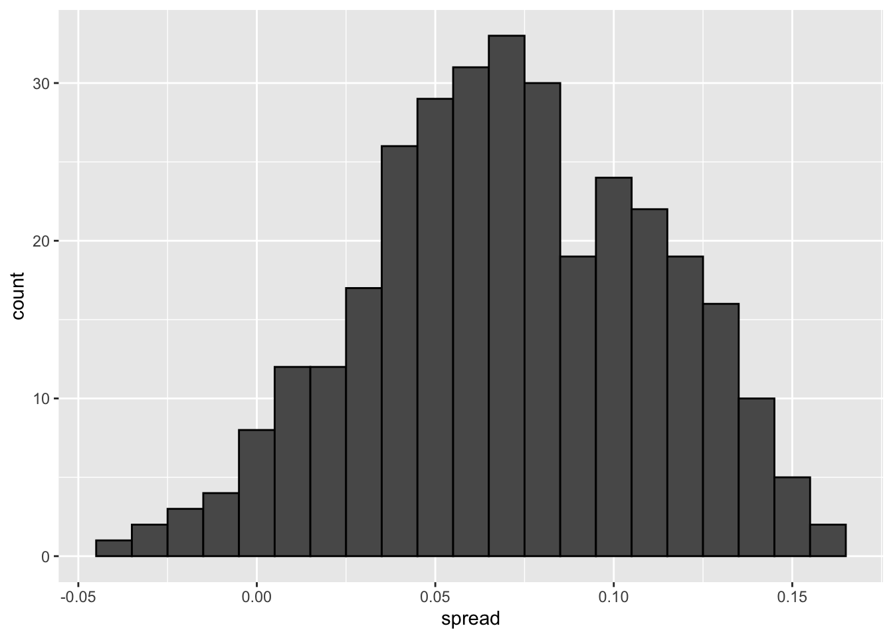
The models we have described include pollster-to-pollster variability and sampling error. But this plot is for one pollster and the variability we see is certainly not explained by sampling error. Where is the extra variability coming from? The following plots make a strong case that it comes from time fluctuations not accounted for by the theory that assumes \(p\) is fixed:
`geom_smooth()` using formula = 'y ~ x'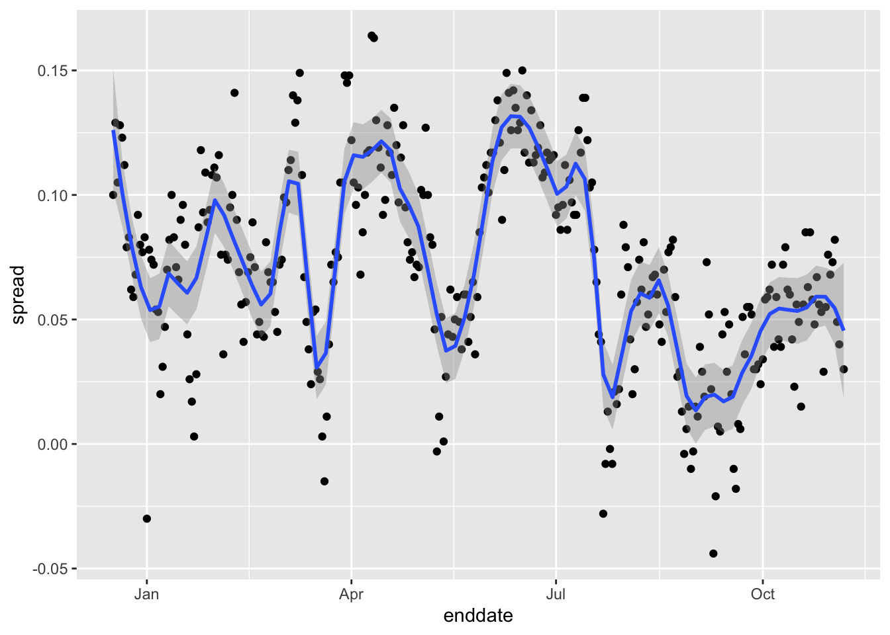
Some of the peaks and valleys we see coincide with events such as the party conventions, which tend to give the candidate a boost. We can see the peaks and valleys are consistent across several pollsters:
`geom_smooth()` using formula = 'y ~ x'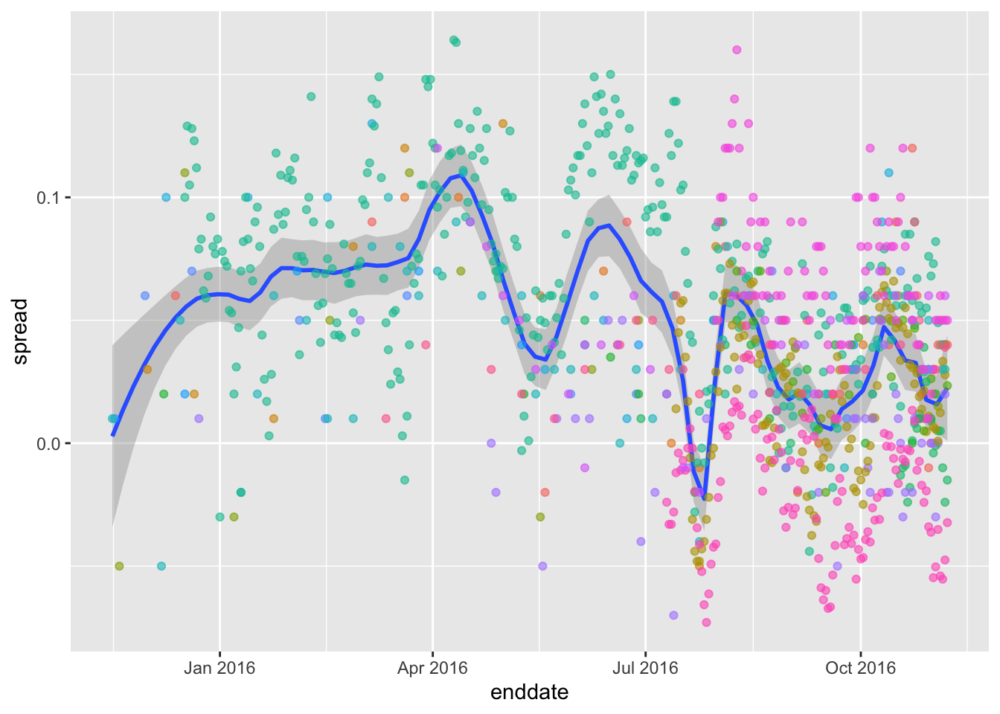
This implies that, if we are going to forecast, our model must include a term to accounts for the time effect. We need to write a model including a bias term for time, denote it \(b_t\). The standard deviation of \(b_t\) would depend on \(t\) since the closer we get to election day, the closer to 0 this bias term should be.
Pollsters also try to estimate trends from these data and incorporate these into their predictions. We can model the time trend \(b_t\) with a smooth function. We usually see the trend estimte not for the difference, but for the actual percentages for each candidate like this:
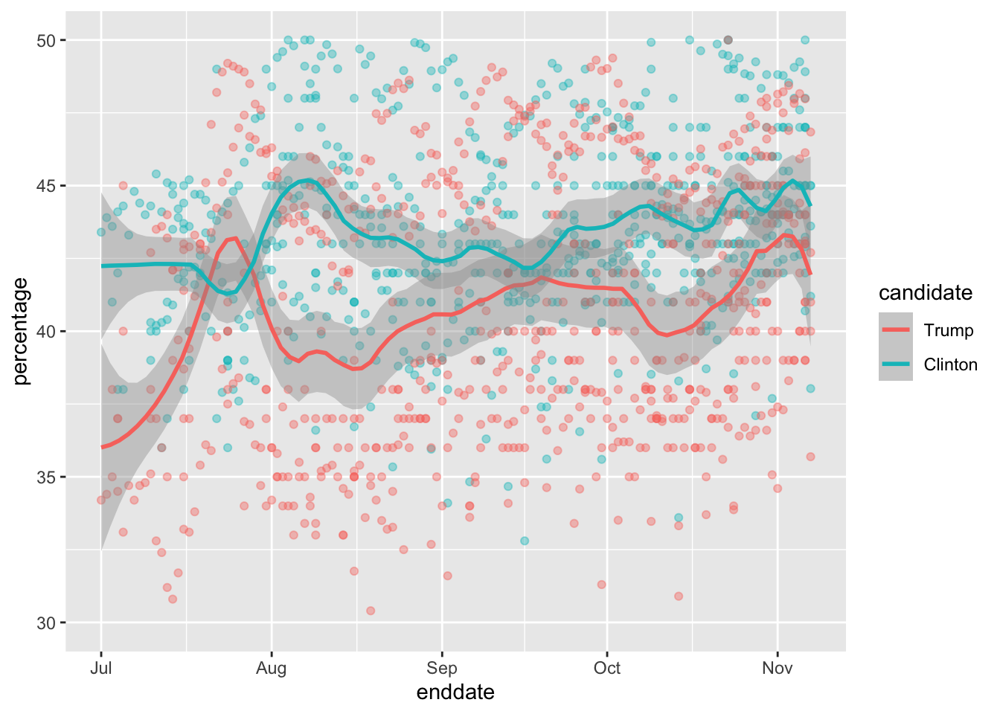
Once a model like the one above is selected, we can use historical and present data to estimate all the necessary parameters to make predictions. There is a variety of methods for estimating trends which we discuss in the Machine Learning part.
19.6 Exercises
We have been using urn models to motivate the use of probability models. Most data science applications are not related to data obtained from urns. More common are data that come from individuals. The reason probability plays a role here is because the data come from a random sample. The random sample is taken from a population and the urn serves as an analogy for the population.
Let’s revisit the heights dataset. Suppose we consider the males in our course the population.
library(dslabs)
x <- heights |> filter(sex == "Male") |>
pull(height)Mathematically speaking,
xis our population. Using the urn analogy, we have an urn with the values ofxin it. What are the average and standard deviation of our population?Call the population average computed above \(\mu\) and the standard deviation \(\sigma\). Now take a sample of size 50, with replacement, and construct an estimate for \(\mu\) and \(\sigma\).
What does the theory tell us about the sample average \(\bar{X}\) and how it is related to \(\mu\)?
- It is practically identical to \(\mu\).
- It is a random variable with expected value \(\mu\) and standard error \(\sigma/\sqrt{N}\).
- It is a random variable with expected value \(\mu\) and standard error \(\sigma\).
- Contains no information.
So how is this useful? We are going to use an oversimplified yet illustrative example. Suppose we want to know the average height of our male students, but we only get to measure 50 of the 708. We will use \(\bar{X}\) as our estimate. We know from the answer to exercise 3 that the standard estimate of our error \(\bar{X}-\mu\) is \(\sigma/\sqrt{N}\). We want to compute this, but we don’t know \(\sigma\). Based on what is described in this section, show your estimate of \(\sigma\).
Now that we have an estimate of \(\sigma\), let’s call our estimate \(s\). Construct a 95% confidence interval for \(\mu\).
Now run a Monte Carlo simulation in which you compute 10,000 confidence intervals as you have just done. What proportion of these intervals include \(\mu\)?
Use the
qnormandqtfunctions to generate quantiles. Compare these quantiles for different degrees of freedom for the t-distribution. Use this to motivate the sample size of 30 rule of thumb.In 1999, in England, Sally Clark was found guilty of the murder of two of her sons. Both infants were found dead in the morning, one in 1996 and another in 1998. In both cases, she claimed the cause of death was sudden infant death syndrome (SIDS). No evidence of physical harm was found on the two infants so the main piece of evidence against her was the testimony of Professor Sir Roy Meadow, who testified that the chances of two infants dying of SIDS was 1 in 73 million. He arrived at this figure by finding that the rate of SIDS was 1 in 8,500 and then calculating that the chance of two SIDS cases was 8,500 \(\times\) 8,500 \(\approx\) 73 million. Which of the following do you agree with?
- Sir Meadow assumed that the probability of the second son being affected by SIDS was independent of the first son being affected, thereby ignoring possible genetic causes. If genetics plays a role then: \(\mbox{Pr}(\mbox{second case of SIDS} \mid \mbox{first case of SIDS}) > \mbox{P}r(\mbox{first case of SIDS})\).
- Nothing. The multiplication rule always applies in this way: \(\mbox{Pr}(A \mbox{ and } B) =\mbox{Pr}(A)\mbox{Pr}(B)\)
- Sir Meadow is an expert and we should trust his calculations.
- Numbers don’t lie.
- Until recentely, Florida was one of the most closely watched states in the U.S. election because it has many electoral votes, and the election was generally close, and Florida was a swing state that can vote either way. Create the following table with the polls taken during the last two weeks:
library(tidyverse)
library(dslabs)
polls <- polls_us_election_2016 |>
filter(state == "Florida" & enddate >= "2016-11-04" ) |>
mutate(spread = rawpoll_clinton/100 - rawpoll_trump/100)Take the average spread of these polls. The CLT tells us this average is approximately normal. Calculate an average and provide an estimate of the standard error. Save your results in an object called results.
- Now assume a Bayesian model that sets the prior distribution for Florida’s election night spread \(\mu\) to be Normal with expected value \(\theta\) and standard deviation \(\tau\). What are the interpretations of \(\theta\) and \(\tau\)?
- \(\theta\) and \(\tau\) are arbitrary numbers that let us make probability statements about \(\mu\).
- \(\theta\) and \(\tau\) summarize what we would predict for Florida before seeing any polls. Based on past elections, we would set \(\mu\) close to 0 because both Republicans and Democrats have won, and \(\tau\) at about \(0.02\), because these elections tend to be close.
- \(\theta\) and \(\tau\) summarize what we want to be true. We therefore set \(\theta\) at \(0.10\) and \(\tau\) at \(0.01\).
- The choice of prior has no effect on Bayesian analysis.
The CLT tells us that our estimate of the spread \(\hat{\mu}\) has normal distribution with expected value \(\mu\) and standard deviation \(\sigma\) calculated in problem 6. Use the formulas we showed for the posterior distribution to calculate the expected value of the posterior distribution if we set \(\theta = 0\) and \(\tau = 0.01\).
Now compute the standard deviation of the posterior distribution.
Using the fact that the posterior distribution is normal, create an interval that has a 95% probability of occurring centered at the posterior expected value. Note that we call these credible intervals.
According to this analysis, what was the probability that Trump wins Florida?
Now use
sapplyfunction to change the prior variance fromseq(0.005, 0.05, len = 100)and observe how the probability changes by making a plot.In April 2013, José Iglesias, a professional baseball player was starting his career. He was performing exceptionally well. Specifically, he had a batting average (AVG) of .450. The batting average statistic is one way of measuring success. Roughly speaking, it tells us the success rate when batting. José had 9 successes out of 20 tries. An AVG of .450 means José has been successful 45% of the times he has batted which is rather high, historically speaking: no one has finished a season with an
AVGof .400 or more since Ted Williams did it in 1941! We want to predict José’s batting average at the end of the season after players have about 500 tries or at bats. With the frequentist techniques we have no choice but to predict that his AVG will be .450 at the end of the season. Compute a confidence interval for the success rate.Despite the frequentist prediction of \(.450\) not a single baseball enthusiast would make this prediction. Why is this? One reason is that they now the estimate has much uncertainty. However, the main reason is that they are implicitly using a hierarchical model that factors in information from years of following baseball. Use the following code to explore the distribution of batting averages in the three seasons prior to 2013 and describe what this tells us.
So is José lucky or is he the best batter seen in the last 50 years? Perhaps it’s a combination of both luck and talent. But how much of each? If we become convinced that he is lucky, we should trade him to a team that trusts the .450 observation and is maybe overestimating his potential. The hierarchical model provides a mathematical description of how we came to see the observation of .450. First, we pick a player at random with an intrinsic ability summarized by, for example, \(\mu\). Then we see 20 random outcomes with success probability \(\mu\). What model would you use for the first level of your hierarchical model?
Describe the second level of the hierarchical model.
Apply the hierarchical model to José’s data. Suppose we want to predict his innate ability in the form of his true batting average \(\mu\). Write down the distributions of the hierarchical model.
We now are ready to compute a the distribution of \(\mu\) conditioned on the observed data \(\bar{X}\). Compute the expected value of \(\mu\) given the current average \(\bar{X}\) and provide an intuitive explanation for the mathematical formula.
We started with a frequentist 95% confidence interval that ignored data from other players and summarized just José’s data: .450 \(\pm\) 0.220. Construct a credible interval for \(\mu\) based on the hierarchical model.
The credible interval suggests that if another team is impressed by the .450 observation, we should consider trading José as we are predicting he will be just slightly above average. Interestingly, the Red Sox traded José to the Detroit Tigers in July. Here are the José Iglesias batting averages for the next five months:
| Month | At Bat | Hits | AVG |
|---|---|---|---|
| April | 20 | 9 | .450 |
| May | 26 | 11 | .423 |
| June | 86 | 34 | .395 |
| July | 83 | 17 | .205 |
| August | 85 | 25 | .294 |
| September | 50 | 10 | .200 |
| Total w/o April | 330 | 97 | .293 |
Which of the two approaches provided a better prediciton?